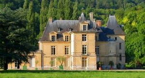
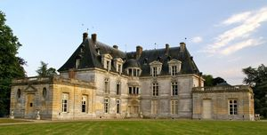
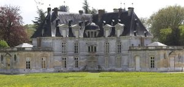
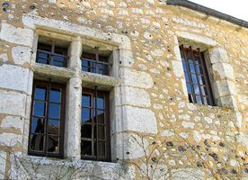

Recensement Jean-Claude Truffet
| Département | 27 — Eure |
| Canton | Pont-de-l |
| Commune | Acquigny |
| Type d'édifice | Château |
| Période d'origine | XIV-XVI-XVIII |
| Coordonnées GPS | 49° 10' 20" Nord, 1° 11' 15" Est Manoir-prison Garv-4 GPS : 49° 10' 26" Nord, 1° 11' 18" Est PLanches GPS : 49° 9' 15,54" Nord, 1° 10' 36,61" Est |




Deux châteaux dans cet article; Acquigny, Ailly AILLY, date du XIIIe, XVIe et XVIIe siècle. le manoir d'Ailly appartenait au XIe siècle au chapitre de Beauvais. Après la Révolution, seule, a subsisté la partie orientale de l'enclos dans laquelle se trouve le logis principal. C'est une construction carrée à étage remontant au XIIIe siècle. Des baies géminées à oculus tréflé percent la façade Sud et le pignon Ouest. La façade Nord, reprise au XVIIe siècle, dévoile une travée Est du début du XVIe siècle avec des baies à meneaux sculptées aux armes des chanoines de Beauvais. L'étage et les combles sont accessibles par un escalier qui date de la fin du XVIIe siècle. Le Manoir du Chapitre est inscrit aux M.H. en totalité depuis le 10.11.1998. PLANCHES, la construction des Planches date des XVIIIe et XIXe siècles. se situe sur l'Eure, au Hameau des Planches, sur l'ancienne route royale de Rouen à Orléans, est inscrit au titre des M.H. PRISON, ancienne construction date du XIVe au XVIe siècle. L'ancien manoir de la famille de Poissy, au XIIIe siècle. A partir du XVe siècle, les seigneurs d'Acquigny y tenaient une Haute Justice. Le gros-oeuvre date du XIVe siècle, le réaménagement date du XVIe siècle et la charpente porte la date de 1739 (réfection).
ACQUIGNY, le château d'Acquigny a été bâti vers 1550 par Anne de Montmorency-Laval, qui en hérite, cousine du Roi de France, Henri II et proche de la reine Catherine de Médicis. Elle voulut que l'architecte Philibert de l'Orme, s'inspire de son amour pour son défunt époux, Louis de Silly, seigneur de La Roche-Guyon et construise sa demeure sur le plan de leurs quatre initiales entrelacées A.L.L.S. origine d'un plan complexe et d'une construction originale d´une rare élégance centrée sur une gracieuse tourelle à double loggias reposant sur une trompe en forme de coquille Saint-Jacques. En 1656 acquisition par les Le Roux d'Esneval. Le château et le parc ont été progressivement agrandis, puis transformés au XVIIIe siècle. Vers 1745, le président d'Acquigny, président à mortier du parlement de Normandie, fit agrandir par l'architecte C. Thibault, le château en prolongeant les deux corps de bâtiments de la façade dhonneur de constructions légères surmontées de balustres s'associant harmonieusement à lédifice originel comme pour en agrandir ou épanouir ses ailes accueillantes. A la fin de sa vie, le président d'Acquigny fit construire un ermitage accolé à l'église, dénommé "le Petit château", afin de sy retirer et de vivre la règle de la "Grande Trappe de Soligny". L'ensemble des constructions de la deuxième moitié du XVIIIe siècle, constitue un ensemble homogène en briques cuites et pierres de taille, les communs, léglise, lorangerie et un grand parc romantique avec dimportants éléments de lancien à la française, au dessin régulier.
Acquigny Prison Famille de Poissy
"
Acquigny grav 1-2-3 Ailly pas d'image GPS : 49° 10' 20" Nord, 1° 11' 15" Est Manoir-prison Garv-4 GPS : 49° 10' 26" Nord, 1° 11' 18" Est PLanches GPS : 49° 9' 15,54" Nord, 1° 10' 36,61" Est